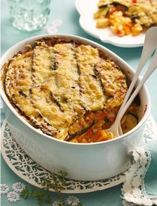
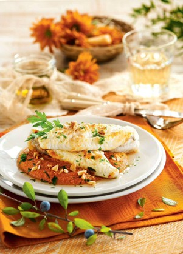

Menú de la Semana
Platos diseñados por nutricionistas, preparados con amor
⏱️ 30 min
Judías Asadas con Huevo Poché
Una explosión de sabor y nutrientes con verduras frescas asadas y un delicado huevo poché.
Ingredientes (4 personas)
- 4 huevos
- 1 manojo de espárragos verdes
- 150 g de judías verdes
- 2-3 zanahorias
- 1 pimiento rojo
- 2-3 ramitas de perejil fresco
- Aceite de oliva virgen extra
- Sal y pimienta
Elaboración
- Elimina la parte dura de los espárragos, despunta las judías verdes. Pela las zanahorias y córtalas en bastones. Limpia el pimiento rojo, retira semillas y filamentos, y córtalo también en tiras.
- Dispón las verduras en una bandeja de horno. Salpimiéntalas al gusto, riégalas con un poco de aceite de oliva y ásalas con el grill encendido durante 10-12 minutos, hasta que empiecen a dorarse ligeramente.
- Para hacer los huevos, cubre el interior de un cuenco pequeño con film transparente y casca dentro un huevo. Cierra bien el film formando un saquito y átalo con una goma. Cuécelo en agua hirviendo durante 4 minutos.
- Escalda las hojas de perejil unos segundos en agua hirviendo. Pásalas a agua muy fría, escúrrelas y tritúralas con un chorrito de aceite hasta obtener un aceite verde y aromático.
- Sirve las verduras asadas en los platos, coloca un huevo en el centro de cada uno y termina con un poco del aceite de perejil por encima.

⏱️ 45 min
Lasaña de Calabacín con Pollo
¿Eres fan de la lasaña? Ahora puedes cocinarla de una forma deliciosa y mucho más saludable sustituyendo las láminas de pasta por calabacín.
Ingredientes
- 3 calabacines
- 3 pechugas de pollo
- 3 tomates
- Tomillo
- Sal
- 2 zanahorias
- 2 cebollas
- 1 puerro
- 1 pimiento rojo
- 3 cucharadas de harina
- 100 ml de vino blanco
- 80 gr de queso rallado
- Aceite de oliva
- Pimienta
Elaboración
- Comienza por lavar y cortar los calabacines en láminas finas a lo largo.
- Pon las láminas de calabacín en una bandeja de horno, salpiméntalas y rocía con aceite de oliva. Hornéalas 10 minutos en el horno precalentado a 200º C.
- Trocea el pollo, lava y pica los tomates, la zanahoria, el puerro y las cebollas. Haz lo mismo con el pimiento. Rehoga en una sartén con un poco de aceite la cebolla, el puerro, el pimiento, la zanahoria y el pollo.
- Ahora añade el tomate y cocina durante otros cinco minutos. Pon la harina, el vino y un poco de sal. Cuece unos 5 o 6 minutos.
- Monta la lasaña sobre una bandeja de horno, alternando capas de láminas de calabacín y del relleno de las hortalizas y el pollo. Añade el queso rallado y gratina durante 10 o 12 minutos.

⏱️ 50 min
Rape con Salsa de Almendras
Una receta que mejora la salud y te cuida con pescado. El pescado blanco es bajo en grasas y rico en proteínas.
Ingredientes (4 personas)
- 4 lomos de rape
- 5 tomates
- 1 cabeza de ajo
- 2 rebanadas de pan tostado
- Sal y pimienta
- 100 g de almendras tostadas
- Perejil
- Aceite de oliva virgen
- 2 cucharadas de vinagre de vino tinto
Elaboración
- Lava los tomates y ponlos en una bandeja de horno con la cabeza de ajo. Hornéalos a 200 °C durante 30 min. Retíralos y déjalos templar.
- Lava el rape y sécalo.
- Pela las almendras y reserva algunas.
- Lava el perejil, escúrrelo y pícalo fino.
- Trocea el pan y mézclalo con el vinagre.
- Luego, pela los tomates y los ajos. Tritura estos con la mezcla de pan, el resto de las almendras, 5 cucharadas de aceite, sal y pimienta.
- Dora el rape, por todos lados, en 1 cucharada de aceite, 10 min.
- Reparte en 4 platos la salsa de almendras, añade el pescado y sírvelo condimentado con sal, pimienta, perejil y las almendras reservadas picadas.